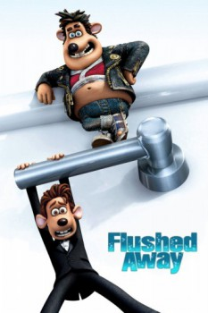

Country:United Kingdom, 85 minutes
Spoken languages:English
Genres:Adventure, Animation, Comedy, Family
Director(s):David Bowers, Sam Fell
Writer(s):Joe Keenan, Dick Clement, William Davies, Christopher Lloyd, Ian La Frenais
Video Codec:Unknown
Number: 5732

Certification:PG
Storyline:
London high-society mouse, Roddy is flushed down the toilet by Sid, a common sewer rat. Hang on for a madcap adventure deep in the sewer bowels of Ratropolis, where Roddy meets the resourceful Rita, the rodent-hating Toad and his faithful thugs, Spike and Whitey.
Cast:
Hugh Jackman (voice of Roddy), Kate Winslet (voice of Rita), Ian McKellen (voice of The Toad), Jean Reno (voice of Le Frog), Bill Nighy (voice of Whitey)
Medium: Media file,
Location: D:\Flushed Away\Flushed Away.mp4
Loaned: No
Aspect ratio: Unknown